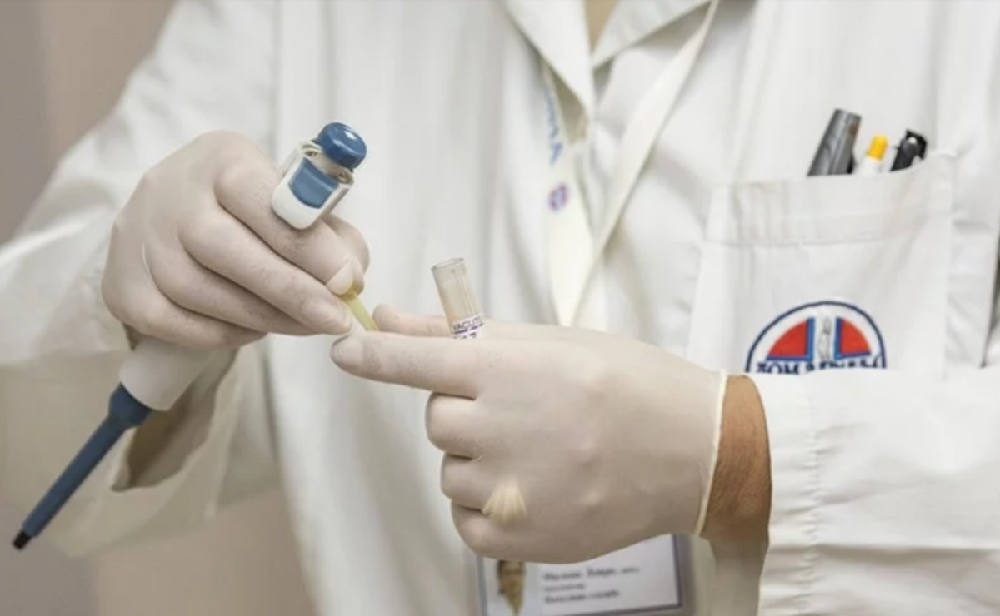
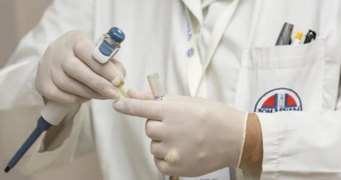
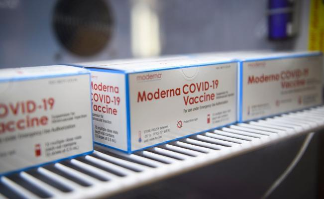
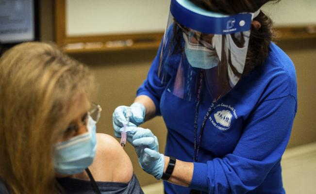

FDA aprueba anticuerpos monoclonales para reducir la gravedad por Covid

La
Administración de Alimentos y Medicamentos de Estados Unidos (FDA por sus siglas en inglés) acaba de aprobar un tratamiento con anticuerpos monoclonales para reducir la gravedad por Covid-19.
El tratamiento está destinado para que adultos y niños con casos leves y moderados puedan reducir el riesgo de ver empeorar su condición debido a la infección.
En un comunicado de prensa, la FDA anunció la autorización del uso de emergencia (EUA) del bamlanivimab y etesevimab para que sean suministrados juntos en adultos y niños mayores de 12 años o que pesen al menos 88 libras (40 kilos) y en adultos mayores de 65 años con determinadas afecciones médicas crónicas.
Los pacientes hospitalizados, con síntomas graves y conectados a ventiladores no podrán usar este tratamiento.
'La acción de hoy, que proporciona otro tratamiento para COVID-19, refleja el fuerte compromiso de la FDA de trabajar con patrocinadores para expandir las posibles opciones de tratamiento que los proveedores de atención médica pueden usar para combatir esta pandemia', dijo Patrizia Cavazzoni, directora interina del Centro de la FDA.
'Los datos que respaldan esta autorización de emergencia se suman a la evidencia emergente que apunta a la utilidad clínica de los anticuerpos neutralizantes para el tratamiento de Covid-19 en ciertos pacientes.Como parte de nuestro Programa de Aceleración del Tratamiento del Coronavirus, la FDA utiliza todos los recursos a nuestra disposición para hacer disponibles tratamientos como estos anticuerpos monoclonales mientras continúa estudiando su seguridad y efectividad', añadió.
Estos anticuerpos son proteínas creadas en laboratorio que imitan la capacidad del sistema inmunológico para combatir patógenos dañinos como los virus.
Los
bamlanivimab y
etesevimab son anticuerpos monoclonales que están dirigidos específicamente contra la proteína principal del SARS-CoV-2 para bloquear la unión del virus y su entrada a las células humanas.
Para la aprobación de la EUA con los anticuerpos, los investigadores realizaron un ensayo científico aleatorizado, doble ciego y controlado con placebo en 1035 adultos no hospitalizados son síntomas de Covid de leves a moderados que presentaron un alto riesgo de progresar a graves.
Los pacientes bajo tratamiento monoclonal redujeron el riesgo de empeorar su condición, de hospitalización y de muerte frente a los pacientes que recibieron placebo.
'La dosis autorizada de 700 miligramos de bamlanivimab y 1400 miligramos de etesevimab administrados juntos se basa en análisis de datos preclínicos, clínicos y virológicos disponibles, así como en modelos farmacocinéticos y farmacodinámicos, que, en su totalidad, respaldan que se espera que la dosis autorizada tenga un efecto clínico y virológico similar a 2 mil 800 miligramos de bamlanivimab y 2 mil 800 miligramos de etesevimab administrados juntos', dijo la FDA.
No te pierdas de las últimas noticias de Vive Usa en Google News, síguenos aquí
Posted On: 2021-02-11T00:00:00



Content Date: 2021-02-11
Download Date: 2021-05-30
Document ID: L0C04COZS